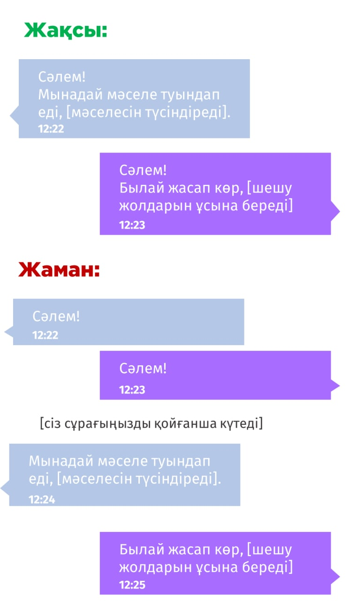

Өтініш, чатта мета-сұрақ қоймаңыз!
Мета-сұрақ - басқа сұрақтарға меңзеп отыратын сұрақ, мысалға алсақ:
— "Жарайды көрдім. Бірақ неге бұндай сұрақтарды қоймау керек?"
— Бұл уақытты құртады! Сіздің уақытыңызды, және де сізге көмек бергісі келген адамдардың да! Сіз көзбе-көз әңгімелескендегідей әдепті болып отырсыз, бірден өзіңіздің мәселеңізге көшпей. Бірақ чат, хабарламалар жазысу - мүлдем басқа зат. Адамдар сөйлегеннен көрі баяу жазады. Сонда сіз әдепті болудың орнына басқа адамды сіз сұрағыңызды қойып біткенше күткізіп қоясыз, ал бұл сіздің сол жауапты алу уақытын созады. Жай уақыт жоғалтып аласыз, бостан босқа.
Тура осы қағида келесі түрдегі сұрақтарға қатысты:"Сәлем", "Сәлем. осындасыңба?", "Уақытың бар ма?". Жай сұрағыңызды қоя беріңіз!
Бұған қоса, сіз өзіңіздің сұрағыңызды бірден қойған кезде оны оқыған адам тіпті сіз желіде болмаған жағдайда да жауап бере алады. Яғни, сіздің "Сәлем" деп жіберген хабарламаңызды қарап "Не болып қалды?"деген сұрақты өз-өзіне қоймай.
